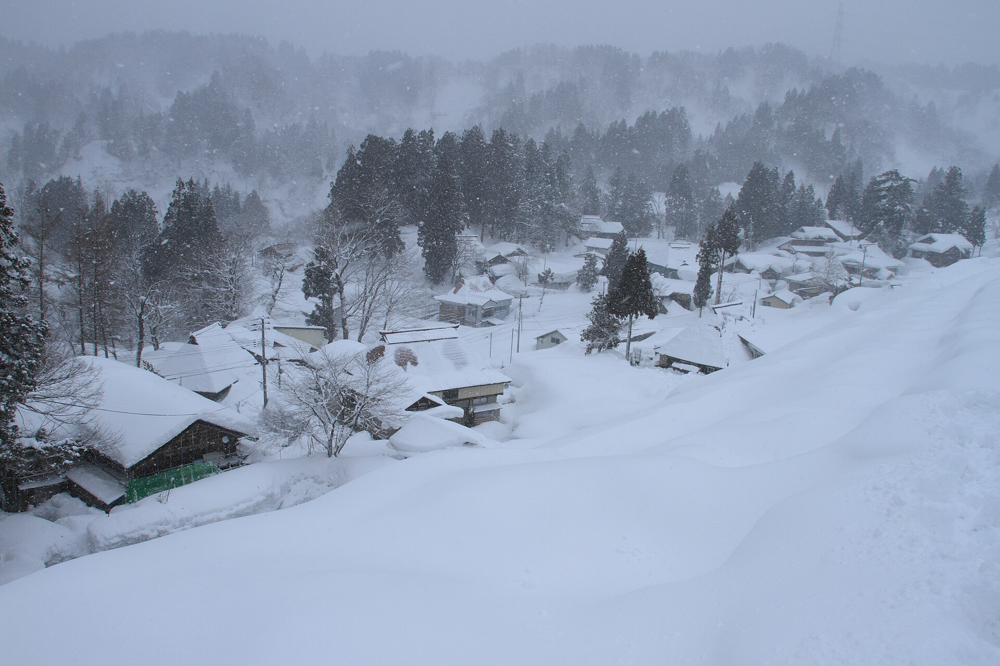
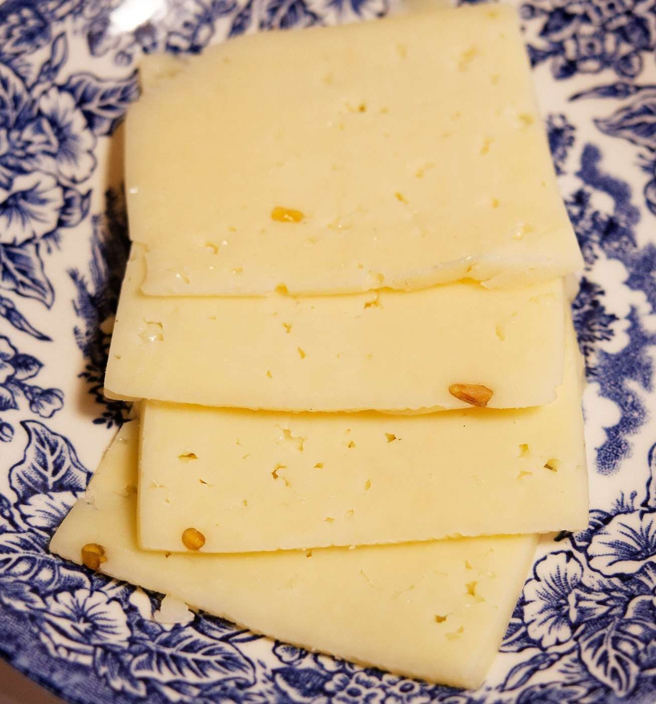
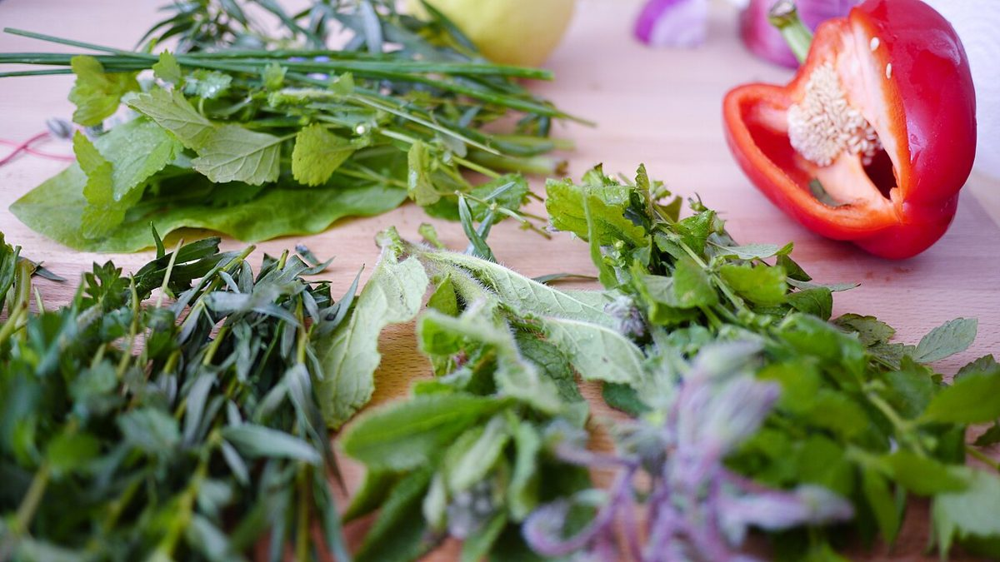
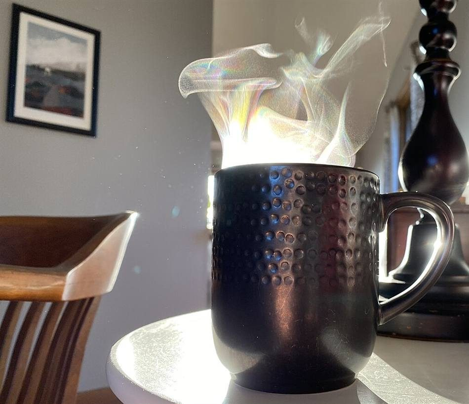
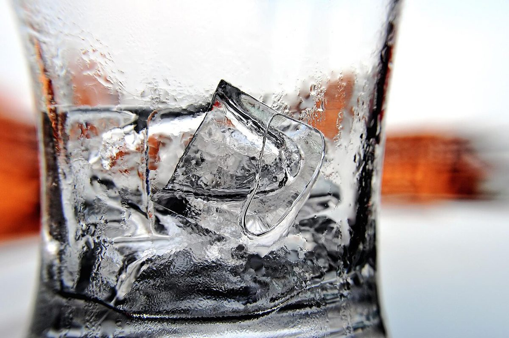
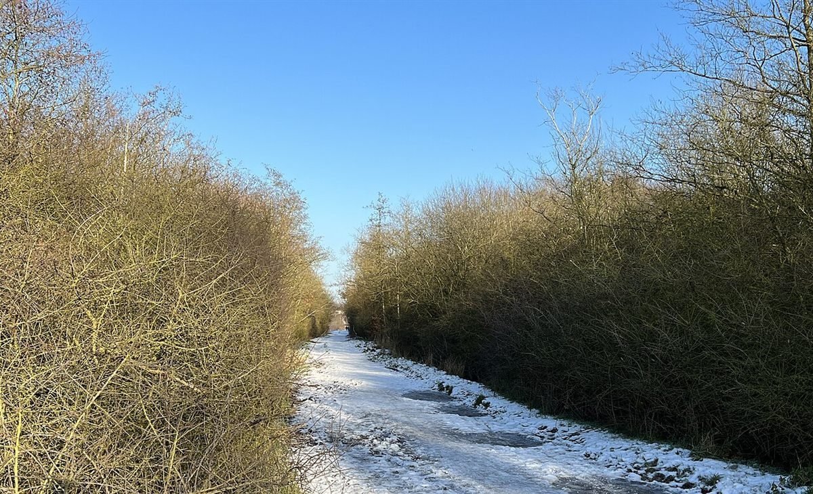
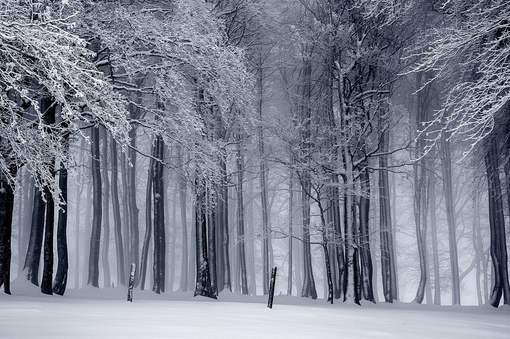
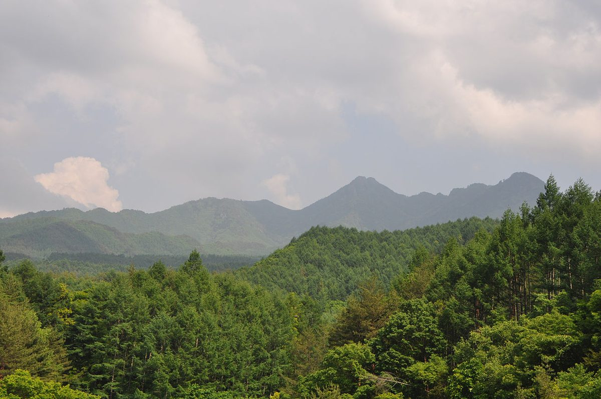

新潟県妙高市・赤倉温泉街
湯の町の通りで、
焼きたての一本を。
温泉まんじゅうの老舗「萬寿堂」の隣で、ドイツ生まれのプレッツェルに焼きソーセージをはさむ。KRONEは、湯めぐりとスキーの合間に立ち寄れる、ホットドッグ専門店です。
お店の由来・想い
老舗の隣に生まれた、新しい一軒。
紹介記事によると、KRONEは2021年12月、赤倉温泉街にオープンしたホットドッグ専門店です。元祖温泉まんじゅうで知られる「萬寿堂」の隣にあり、萬寿堂が新しく始めたお店として紹介されています。店の外観などは店主がDIYで作り、約1か月かけて完成させたと伝えられています。
パンには、ドイツから輸入した柔らかいパンタイプのプレッツェルを使用。注文を受けてから、目の前でソーセージを焼いてくれるのも特徴とされています。ウィンタースポーツのお客様や海外からの観光客にも親しまれているそうです。

情報源: ごーがいネット(2022年の紹介記事) / テレビ新潟(紹介記事) / 上越タウンジャーナル系(2022年の紹介記事) / Instagram
店名「KRONE」の意味は、確認できた資料には見当たりません。上記の事実以外の言い回し(見出しなど)は制作側の表現です。
メニュー
プレッツェルドッグを中心に。
紹介記事で確認できた内容です。現在の提供内容・価格は変わっている場合があるため、価格・詳細は準備中とし、最新情報はInstagramをご確認ください。
プレッツェルドッグ
柔らかいプレッツェルに、石川県産のプレミアム能登豚「豚輝」のソーセージとザワークラウトをのせた定番。パンはレギュラーとハーフ、ソーセージはプレーン・ハーブ・チョリソーから選べるとされています。
トッピング
チーズやハラペーニョなどのトッピングが紹介されています。
焼きソーセージ
プレーン・ハーブ・チョリソーの焼きソーセージ。単品や3本セットの販売が紹介されています。
ドリンク・甘いもの
地元MYOKO COFFEEのオリジナル焙煎コーヒーや地ビールが紹介されています。期間限定で、韓国発祥のかき氷「糸ピンス」やブルーベリーソフトも案内されました。






写真は雰囲気を伝えるフリー素材で、お店の実際の商品ではありません。
赤倉の景色
雪の季節も、緑の季節も。
赤倉温泉は、冬はスキー、そのほかの季節は高原や湯めぐりで訪れる人の多い温泉地です。KRONEの営業時間は季節によって変わると案内されています(詳細は準備中)。




景色の写真は、赤倉以外で撮影されたフリー素材のイメージです。
口コミ(イメージ例)
こんなお声が届きそうです。
ご来店のお客様
ご来店のお客様
ご来店のお客様
上の3件は制作側が作成したイメージ例で、実在のお客様の声ではありません。
写真クレジット
使用した写真について
このページの写真はすべてフリー素材(Wikimedia Commons)で、お店の実際の様子ではありません。サイズ変更・トリミングの加工をしています。
- images/snow-town.jpg「Village in snow, Koshirakura, Tōkamachi, Niigata, Japan」 Imai / CC BY-SA 2.1 jp / 撮影地: 新潟県十日町市
- images/pretzel.jpg「Pretzel」 作者表記なし(Wikimedia Commons自己公開作品) / パブリックドメイン / 撮影地: 撮影地不明
- images/pretzel-twist.jpg「Another edible pretzel (-2,3,7) link」 Alejo7797 / CC0 1.0 / 撮影地: 撮影地不明
- images/rolls.jpg「Pretzel rolls on a tray, December 2023」 Infrogmation / CC BY-SA 4.0 / 撮影地: アメリカ合衆国
- images/kaiser.jpg「Kaisersemmel」 Kobako / CC BY-SA 2.5 / 撮影地: 撮影地不明
- images/pepper.jpg「Red bell pepper on a plate 2017 A」 Fructibus / CC0 1.0 / 撮影地: 撮影地不明
- images/cheese.jpg「Fenugrek cheese, Elan, Volgograd Oblast 08」 Retired electrician / CC0 1.0 / 撮影地: ロシア・ヴォルゴグラード州
- images/herbs.jpg「Fresh Herbs (Unsplash)」 Thomas Rehehäuser / CC0 1.0 / 撮影地: 撮影地不明
- images/steam.jpg「Coffee steaming in a mug」 PedanticNarrativeController / CC0 1.0 / 撮影地: アメリカ(詳細不明)
- images/ice.jpg「Ice cubes in a glass」 Nattu / CC BY 2.0 / 撮影地: 撮影地不明
- images/snow-path.jpg「Snowy track through Bateswood Country Park」 Jonathan Hutchins / CC BY-SA 2.0 / 撮影地: イギリス
- images/frost.jpg「Winter Scene; Trees Covered with Ice」 Jean Beaufort / CC0 1.0 / 撮影地: 撮影地不明
- images/mountains.jpg「Ogura Mountain-Kita Aiki Village, Nagano, Japan」 Yoshi Canopus / CC BY-SA 3.0 / 撮影地: 長野県
- images/lake.jpg「Calm Yellowstone Lake and distant snowy mountains under cloud」 Z3lvs / CC0 1.0 / 撮影地: アメリカ・イエローストーン